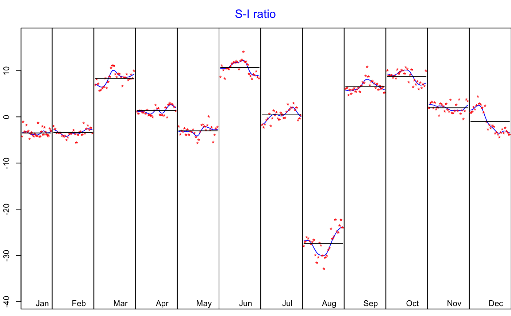
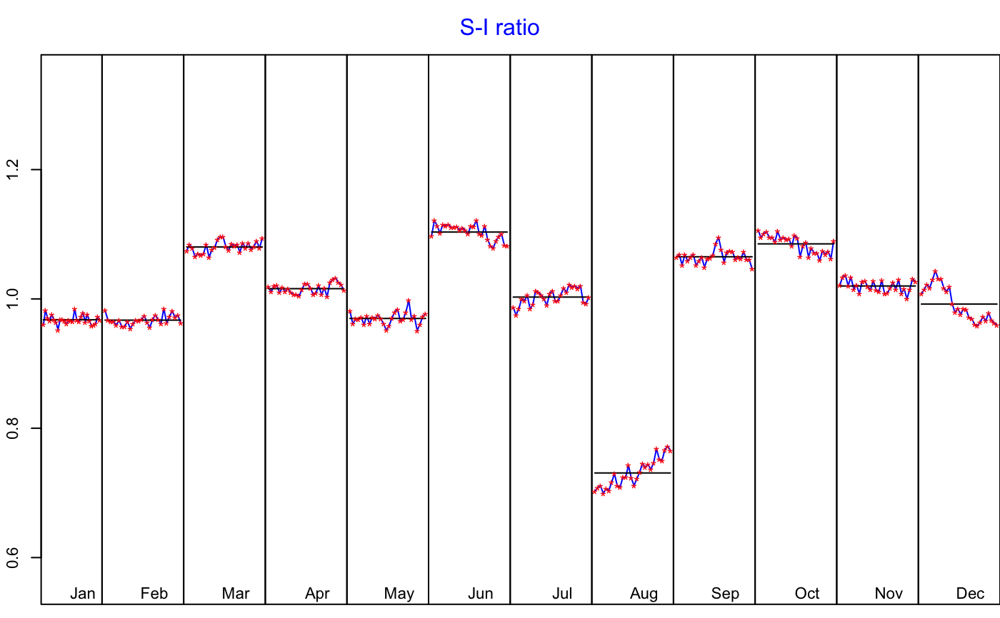

Function to print the decomposition model
print_decomposition( x, format = knitr::opts_knit$get("rmarkdown.pandoc.to"), plot = TRUE, digits = 3, decimal.mark = getOption("OutDec"), booktabs = TRUE, ... )
| x | the object to print. |
|---|---|
| format | output format: |
| plot | boolean indicating whether to plot or not the S-I Ratio. |
| digits | number of digits after the decimal point. |
| decimal.mark | the character to be used to indicate the numeric decimal point. |
| booktabs | boolean indicating whether to use or not the booktabs package (when |
| ... | arguments passed to |
ipi <- RJDemetra::ipi_c_eu[, "FR"] jsa_x13 <- RJDemetra::jx13(ipi) print_decomposition(jsa_x13, format = "latex")#> \underline{\textbf{Decomposition (X-11)}} #> #> Mode: multiplicative #>#> #> #> \begin{table}[H] #> #> \caption{\label{tab:}M-statistics} #> \centering #> \begin{tabular}[t]{lc>{\raggedright\arraybackslash}p{0.7\textwidth}} #> \toprule #> & Value & Description\\ #> \midrule #> M-1 & 0.097 & The relative contribution of the irregular over three months span\\ #> M-2 & 0.053 & The relative contribution of the irregular component to the stationary portion of the variance\\ #> M-3 & 0.995 & The amount of period to period change in the irregular component as compared to the amount of period to period change in the trend\\ #> M-4 & 0.421 & The amount of autocorrelation in the irregular as described by the average duration of run\\ #> M-5 & 0.950 & The number of periods it takes the change in the trend to surpass the amount of change in the irregular\\ #> \addlinespace #> M-6 & 0.154 & The amount of year to year change in the irregular as compared to the amount of year to year change in the seasonal\\ #> M-7 & 0.074 & The amount of moving seasonality present relative to the amount of stable seasonality\\ #> M-8 & 0.211 & The size of the fluctuations in the seasonal component throughout the whole series\\ #> M-9 & 0.064 & The average linear movement in the seasonal component throughout the whole series\\ #> M-10 & 0.267 & The size of the fluctuations in the seasonal component in the recent years\\ #> \addlinespace #> M-11 & 0.250 & The average linear movement in the seasonal component in the recent years\\ #> Q & 0.322 & \\ #> Q-M2 & 0.355 & \\ #> \bottomrule #> \multicolumn{3}{l}{\textbf{Final filters}: M3x5, Henderson-13 terms}\\ #> \end{tabular} #> \end{table} #> #> \begin{table}[H] #> #> \caption{\label{tab:}Relative contribution of the components to the stationary portion of the variance in the original series, after the removal of the long term trend} #> \centering #> \begin{tabular}[t]{lc} #> \toprule #> & Component\\ #> \midrule #> Cycle & 1.941\\ #> Seasonal & 62.123\\ #> Irregular & 0.842\\ #> TD \& Hol. & 2.428\\ #> Others & 32.787\\ #> \addlinespace #> Total & 100.121\\ #> \bottomrule #> \end{tabular} #> \end{table}#> <u><b>Decomposition (SEATS)</b></u> #> #> Mode: multiplicative #>#> #> #> <b>Model</b> #> #> AR: $1+0.386B+0.243B^{2}$ #> #> D: $1-B-B^{12}+B^{13}$ #> #> MA: $1-0.713B^{12}$ #> #> #> #> <b>SA</b> #> #> AR: $1+0.386B+0.243B^{2}$ #> #> D: $1-2.000B+B^{2}$ #> #> MA: $1-0.975B+0.004B^{2}-0.003B^{3}+0.002B^{4}$ #> #> Innovation variance: 0.747 #> #> <b>Trend</b> #> #> #> #> D: $1-2.000B+B^{2}$ #> #> MA: $1+0.028B-0.972B^{2}$ #> #> Innovation variance: 0.070 #> #> <b>Seasonal</b> #> #> #> #> D: $1+B+B^{2}+B^{3}+B^{4}+B^{5}+B^{6}+B^{7}+B^{8}+B^{9}+B^{10}+B^{11}$ #> #> MA: $1+1.353B+1.194B^{2}+1.260B^{3}+1.124B^{4}+0.886B^{5}+0.683B^{6}+0.440B^{7}+0.272B^{8}+0.020B^{9}-0.055B^{10}-0.222B^{11}$ #> #> Innovation variance: 0.030 #> #> <b>Transitory</b> #> #> AR: $1+0.386B+0.243B^{2}$ #> #> #> #> MA: $1-0.316B-0.684B^{2}$ #> #> Innovation variance: 0.052 #> #> <b>Irregular</b> #> #> #> #> #> #> #> #> Innovation variance: 0.222 #> #> #> #> <table class="table" style="margin-left: auto; margin-right: auto;"> #> <caption>Relative contribution of the components to the stationary portion of the variance in the original series, after the removal of the long term trend</caption> #> <thead> #> <tr> #> <th style="text-align:left;"> </th> #> <th style="text-align:center;"> Component </th> #> </tr> #> </thead> #> <tbody> #> <tr> #> <td style="text-align:left;"> Cycle </td> #> <td style="text-align:center;"> 5.694 </td> #> </tr> #> <tr> #> <td style="text-align:left;"> Seasonal </td> #> <td style="text-align:center;"> 88.840 </td> #> </tr> #> <tr> #> <td style="text-align:left;"> Irregular </td> #> <td style="text-align:center;"> 0.820 </td> #> </tr> #> <tr> #> <td style="text-align:left;"> TD & Hol. </td> #> <td style="text-align:center;"> 3.412 </td> #> </tr> #> <tr> #> <td style="text-align:left;"> Others </td> #> <td style="text-align:center;"> 0.469 </td> #> </tr> #> <tr> #> <td style="text-align:left;"> Total </td> #> <td style="text-align:center;"> 99.234 </td> #> </tr> #> </tbody> #> </table># }